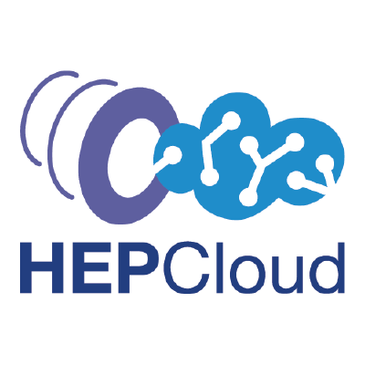

HEPCloud's documentation!
The HEPCloud Facility is a a single managed portal (“HEPCloud”) that will allow more scientists, experiments, and projects to use more resources to extract more science, without the need for expert knowledge. The Decision Engine is a critical component of the HEP Cloud Facility. It provides the functionality of resource scheduling for disparate resource providers, including those which may have a cost or restricted allocation of cycles. The decisionengine package provides the framework and base classes, the decisionengine_modules package contains provider specific implementations of the base classes.